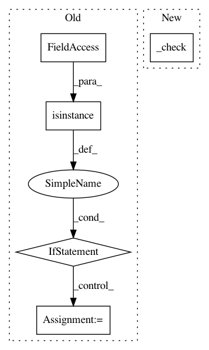

e4a5dbe7e29d64c9b095d134f0ca2a5543353dda,autokeras/hypermodel/node.py,Input,transform,#Input#Any#,28
Before Change
def transform(self, x):
Transform x into a compatible type (tf.data.Dataset).
if isinstance(x, tf.data.Dataset):
return x
if isinstance(x, np.ndarray):
x = x.astype(np.float32)
return tf.data.Dataset.from_tensor_slices(x)
class ImageInput(Input):
After Change
def transform(self, x):
Transform x into a compatible type (tf.data.Dataset).
self._check(x)
dataset = self._convert_to_dataset(x)
return dataset
In pattern: SUPERPATTERN
Frequency: 3
Non-data size: 5
Instances
Project Name: keras-team/autokeras
Commit Name: e4a5dbe7e29d64c9b095d134f0ca2a5543353dda
Time: 2019-10-20
Author: jhfjhfj1@gmail.com
File Name: autokeras/hypermodel/node.py
Class Name: Input
Method Name: transform
Project Name: chainer/chainercv
Commit Name: 0fb981e6378afdf9b284f0d5dde8642df9856eb8
Time: 2017-05-03
Author: Hakuyume@users.noreply.github.com
File Name: tests/utils_tests/testing_tests/test_constant_stub_link.py
Class Name: TestConstantStubLink
Method Name: test_cpu